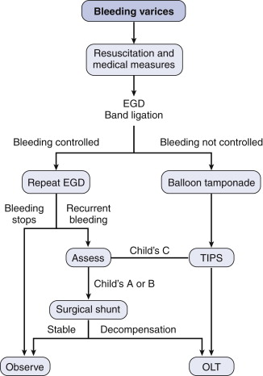
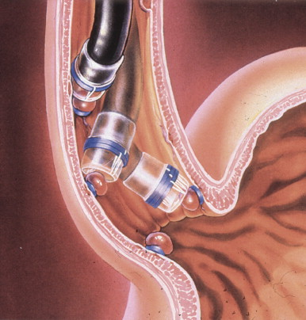

Oesophageal Varices
DEFINITION
Enlarged veins that develop when blood that normally passes through
the portal veins meets resistance.
Typically a complication of portal
hypertension
D E A B M I M
EPIDEMIOLOGY
As per causes of portal hypertension; and typically cirrhosis in
our referral base.
D E A B M I M
AETIOLOGY
As per causes of portal hypertension; and typically cirrhosis in
our referral base.
D E A B M I M
BIOLOGICAL BEHAVIOUR
Pathophysiology
PH leads to reversal of flow in veins that should carry blood
towards the liver.
- blood follows low resistance pathway back to systemic circulation;
via low-pressure systems
Normally-insignificant channels open up to relieve portal pressure
- thus allowing part of the portal blood to bypass the liver.
E.g:
- gastro-oesophageal varices (most common site); blood passing
through to low pressure azygous system.
- caput medusae (recanalization of the obliterated umbilical vein in
ligamentum teres hepatis, to systemic venous circulation)
- lower rectum and anal canal
- stomal sites
- extraperitoneal surface of abdominal organs
Patients with R heart failure as a form of PH do not develop varices
- no pressure gradient between the azygous and PV systems
Complications
Haemorrhage is the major complication
Most apt to happen in GOJ; coronary vein particularly disposed to
dilatation.
Prognosis
Mortality has decreased from 40% to 20%.
- high with advanced liver disease; much better if liver fx intact.
Rebleed rate 60% within 1st two years.
D E A B M I M
MANIFESTATIONS
Upper GI Bleeding
D E A B M I M
INVESTIGATIONS
As below.
D E A B M I M
MANAGEMENT
Plan
Time points for therapy are prophylaxis, acute variceal bleeding and
recurrent variceal bleeding.
Therapies are pharmacologic, endoscopic, TIPS, Surgical shunt and
liver transplant.
Prophylaxis
B-blocker is the mainstay, e.g. propranolol.
- decrease portal blood flow and therefore portal pressure.
- not well tolerated at optimal high dosing (25% reduction in heart
rate or <55bpm)
Obliterate the varices
- e.g. endoscopic banding,
No indication for TIPS or shunting in prophylaxis.
Liver transplant only indicated for end-stage liver disease
regardless of what the varices are doing.
Acute
2 large bore cannulae, group and hold
Resuscitation of lost blood and volume
Correct the coagulopathy
Prevent infection
- high risk in cirrhotics; e.g. quinolone from time of admission.
Decrease portal pressure
Close observation in HDU setting.
Combative encephalopathy pts may benefit from intubation.

(OLT = orthotropic liver
transplant)
Haemorrhage Control
Pharmacologic therapy and endoscopic banding remains the primary
therapeutic plan.
- octreotide to decrease
portal pressure; 50ug IV bolus; 25-50ug/hr IV
--> vasoactive drugs
e.g. vasopressin, continue for 3-5d.
Endoscopy
- band ligation probably most effective measure.
- difficult during active bleeding, need pharmacologic measures
first
Balloon tamponade if unavailable or not successful.
- Senstaken Blackmore tube

If rebleed
TIPS (or Shunts, rarely done in modern era)
If then decompensates, for liver transplant.
TIPS
Transjugular intrahepatic portosystemic shunt = very
effective when endoscopic therapies fail.
- failure rate is ~10%
Hepatic vein is accessed via a jugular stick, and liver transversed
with needle to find portal vein branch
- wire plassed through meedle from hepatic vein to portal vein
(usually right); stent placed over as portosystemic shunt.
Risk is of hepatic decompensation due to diversion from liver.
- progressive coagulopathy and jaundice; predicted by MELD score.
And TIPS occlusion.
- frequent ultrasounds to evaluate patency, revision if occluded.
Encephalopathy may occur independent of liver function
Operative
Old operations of either transthoracic or transabdominal
transgastric variceal ligation replaced by transgastric oesophageal
transection using a stapler.
- a last resort, 33% mortality from liver failure.
Emergency shunt similarly operations carry a very high operative
mortality
Shunt procedures
Indications have dwindled
- now considered for conserved hepatic function
Categories: total decompression, partial decompression and selective
shunts.
- totally diverting blood away from liver can result in
hepatic decompensation
Shunts
Side-side porta-caval or interposition shunts (mesocaval >10mm
wide)
Divert flow from liver, decompress sinusoids, ascites control.
- expose IVC below liver and PV
- us. safe placement of an interposition graft with PTFE (partial)
or join if total
Mesocaval shunt is away from liver; graft from SMV
to IVC
Distal splenorenal shunt is splenic to left renal vein.
TIPS is also effectively a nonselective shunt.
Management
Fluid electrolyte and blood product management needs care.
Sodium restriction, caution with narcotics and sedatives.
Deterioration in liver function is the major risk; needs two-daily
follow-up.
TIPS vs Shunts
Bleeding rates not significantly different.
Encephalopathy rates not too different (50% at least 1 incident
within 5yrs)
Survival rates not too different (~65% at 5 yrs)
Reintervention, though, much higher in TIPS 82% vs 11% shunts
In pts with Child C severe disease, rebleeding may be lower with
definitive shunting.
Bottom Line
Shunts rarely used now with few indications.
- obsolete due to role of endoscopy, TIPS and transplantation.
Play a role in highly selected patients, maybe refractory bleeding
in patients unable to tolerate TIPS (or recurrent Child C).
Prevention of Recurrent Bleeding
Cirrhotics
B-blockers and endoscopic banding to obliterate varices.
Recurrent bleeding & healthy liver function - TIPS is next
option / second line.
-
- progressive liver disease and recurrent bleeding = consider
suitability for transplantation.
Portal vein thrombosis / preserved liver fx
Pts with extrahepatic PH may be more ideal for surgical shunt
procedures if splenic v. open.
Long term durability of TIPS less sure; may be well served with a
vein-vein surgical shunt.
Role of Transplantation
See PH
Notes
on Endoscopic Therapies
1. Endoscopic band ligation

Multiple fire banding device, 5-7 bands deployable
Suction and release on target varix
Begin distally and work backwards.
Repeat ligations 5-10d
Low incidence of minor complications
- shallow ulcers can bleed 5%; limited.
2. Sclerotherapy
Inject beside varix or into lumen of varix or both.
Second injection several cm above first site.
Limit 5ml per varix, 20 total, beware mid or upper oesophagus
intra-varix injections --> systemic system.
High incidence of minor complications
- bacteremia, fever, pulminary infiltrates, and pleural effusions;
all usualy resolve spontaneously
- can get ulceration and even stricture.
3. Other Methods
Rapidly setting polymers in some centers; not FDA approved; risk of
embolus.
Snare devices reported.
Results
Sclerotherapy and band ligation = 80-95% control
Band ligation preferred, reduced complications and effective, with
lower rebleeding (~25%), and requires fewer sessions.
However longer term, more recurrence with banding (30% vs 20%)
- though easily treated with pharmacology or repeat banding.
D E A B M I M
REFERENCES
Cameron 10th